Ознакомление с файловой системой Linux, её структурой, именами и содержанием каталогов. Приобретение практических навыков по применению команд для работы с файлами и каталогами, по управлению процессами (и работами), по проверке исполь- зования диска и обслуживанию файловой системы.
Создаем файл и делаем его копии
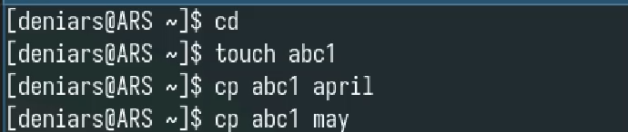
Создаем каталог и копируем туда файлы
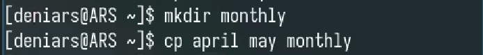
Копируем файл с другим именем
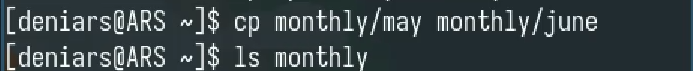
Создаем каталог и покупируем туда файлы из другой папки
рекурсивно
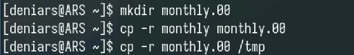
Переименовываем файл
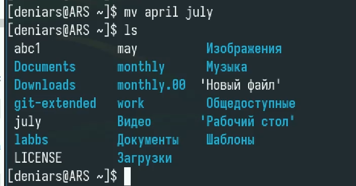
Перемещаем файл в каталог и смотрим его содержимое
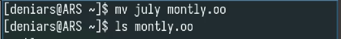
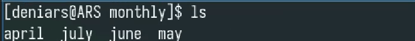
Создаем папку reposts и перемещаем туда содержимое monthly.01
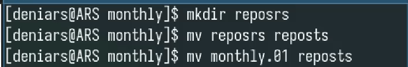
Перемещаем содержимое monthly.01 в monthly
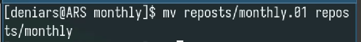
Cоздаем файл may и даем ему новый права доступа
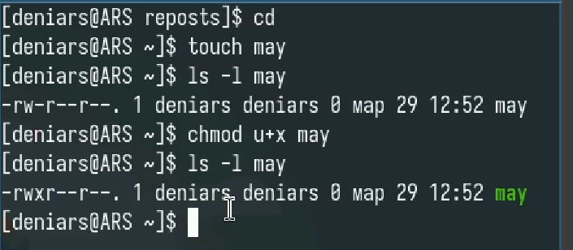
А теперь забираем
Создаем каталог и забираем права доступа(Просмотр и
копирование)
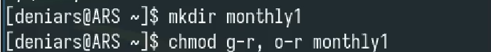
Проверяем какие права присутсвуют
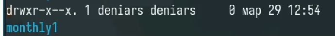
Создаем файл и даем права пользователям на изменение и
переименование
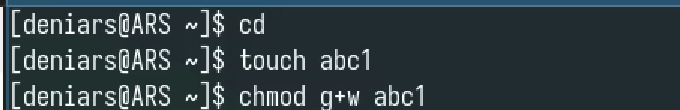
Анализ файловой системы с помощью mount и cat
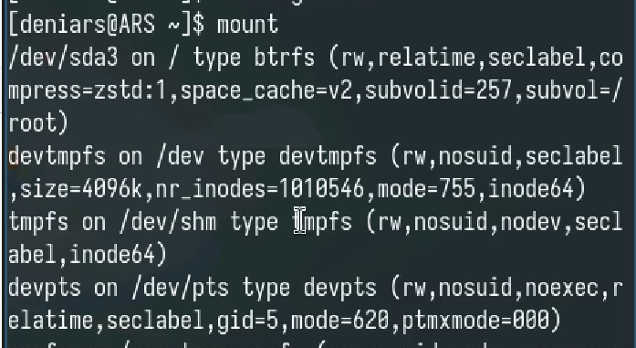
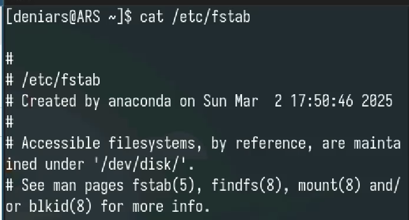
Я научился лучше пользоваться unix системой
:::